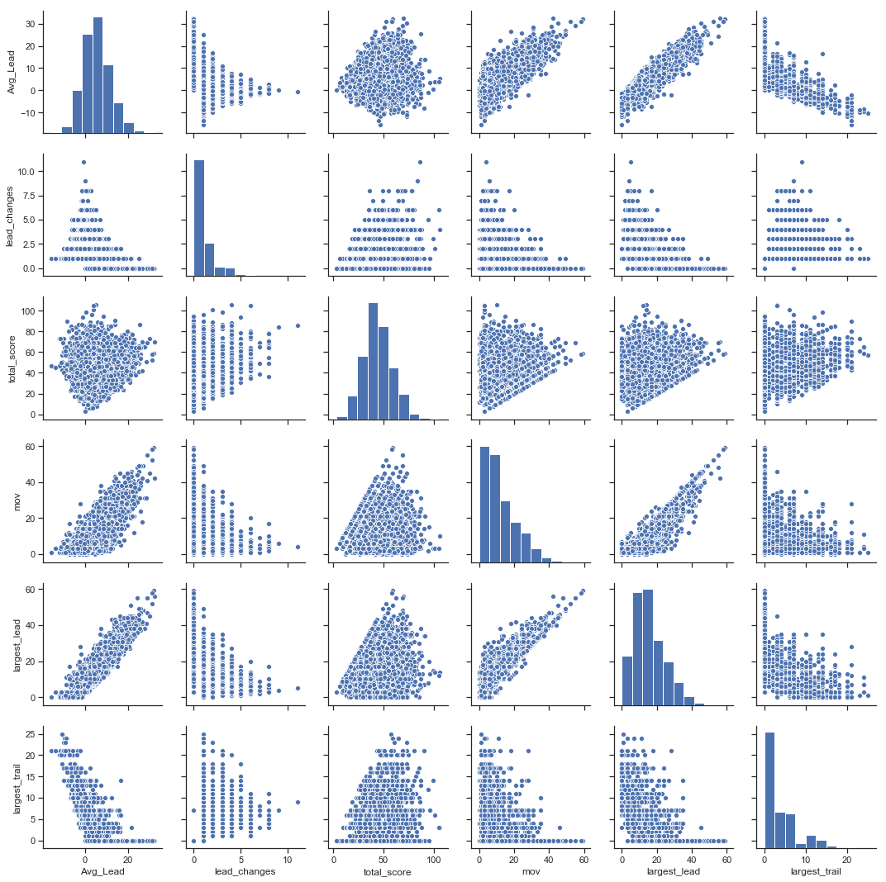
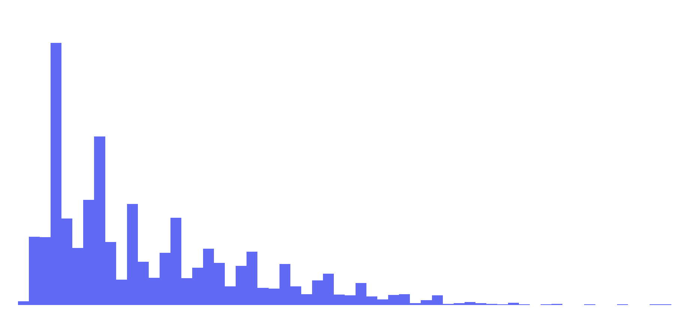
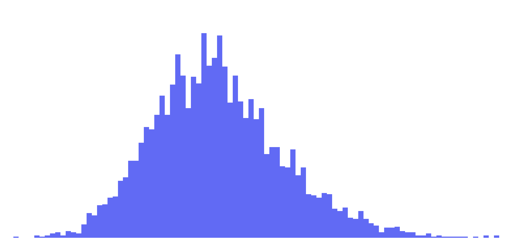
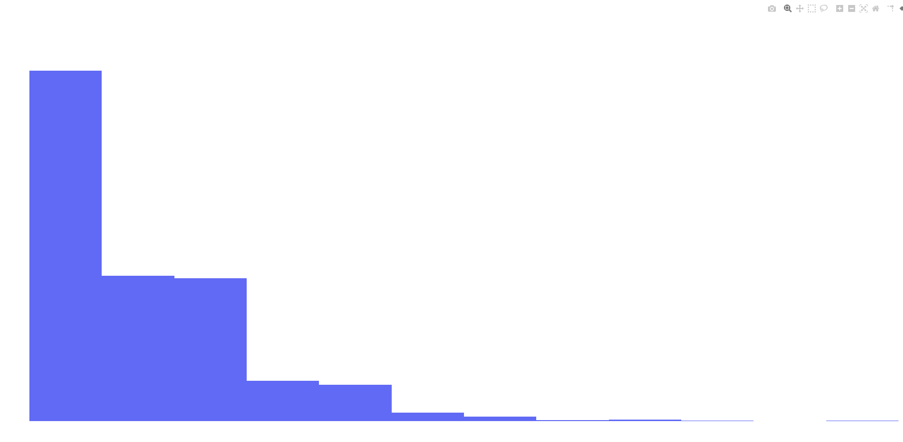
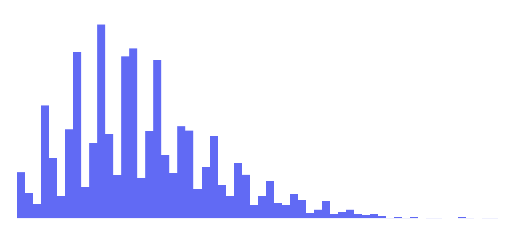
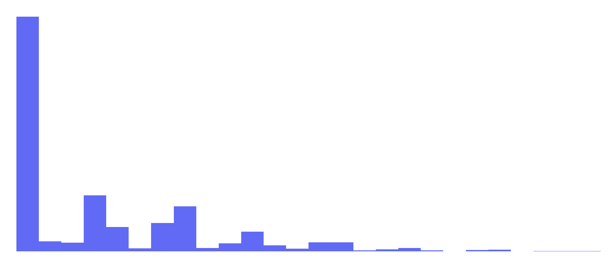
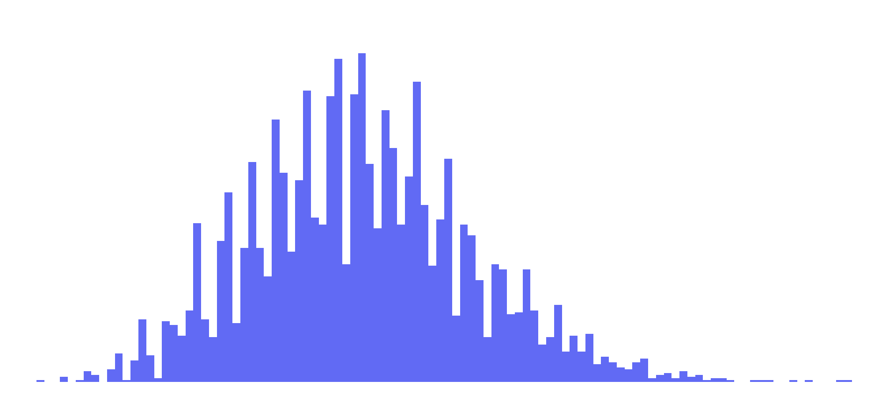
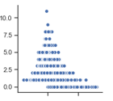
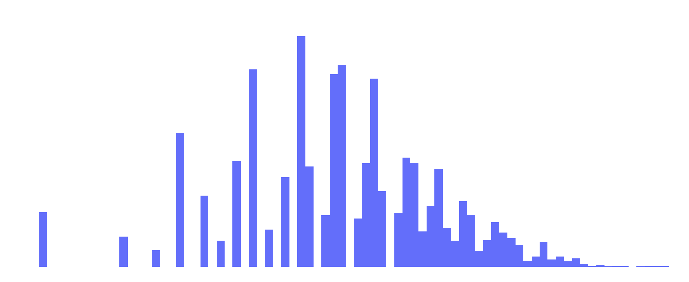
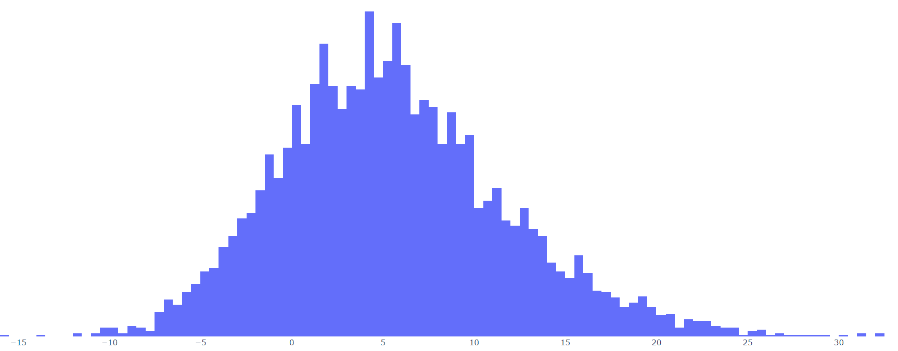

To start looking at margin of victory, we first have to consider all of the variables that could be relevant. Here’s the list I came up with:
- Margin of victory (MOV) – the outright final difference in score
- Average lead (AL) – the lead or deficit faced by the winning team, averaged over the course of the game
- Lead changes (LC) – the number of times the lead changed in the game. Tying the game does not count as lead change; one team must have strictly more points than the other. In addition, the first score of the game is excluded as a lead change
- Largest lead (LL) – the single largest lead the winning team held at any point in the game
- This excludes points scored on the last play of the game, as the team never “held” this lead and it is already accounted for in MOV
- Largest trail (LT) – the single largest deficit the winning team faced at any point in the game.
- Total score (TS) – the cumulative number of points scored during the game
Some of these factors may not be that useful, in which case we will remove them, but for now these seem to be a good way of capturing the quality of a football game: MOV and TS tell you how many points were scored and by whom; LC and AL serve as a proxy for the timing of the scoring (back-and-forth games vs. leading the whole way and garbage-time TDs vs. over by halftime); and LL and LT help define the extremes of the game. These justifications are more intuitive than anything, but we’ll get into some more logical justifications later. To start, let’s look at how these factors correlate with each other:

Here’s a more in depth analytical overview of each of our factors.
| Factor |
Minimum |
Maximum |
Average |
Standard Deviation |
Distribution |
| MOV |
0 (ties), 1 (wins)
Many |
59
NE over TEN, 59-0, 10/18/2009 |
11.72 |
9.20 |

Skellam Distribution |
| AL |
-15.60
MIA over BUF, 24-23, 12/4/2005 |
32.40
ATL over TB, 56-14, 9/18/2014 |
5.56 |
6.29 |

Normal Distribution |
| LC |
0
Many |
11
GB over DET, 45-41, 1/1/2012 |
1.07 |
1.36 |

Poisson Distribution |
| LL |
0
Many |
59
NE over TEN, 59-0, 10/18/2009 |
15.44 |
9.22 |

Positive Skewed Normal Distribution |
| LT |
0
Many |
25
CLE over TEN, 29-28, 10/5/2014 |
3.42 |
4.49 |

Exponential Distribution |
| TS |
3
PIT over MIA, 3-0, 11/26/2007 |
106
CIN over CLE, 58-48, 11/28/2004 |
44.10 |
14.11 |

Normal Distribution |
Now let’s take a look at each of these factors in a little more depth. For reference, I’m going in with the idea that AL and MOV are probably the main variables we will want to use and the other factors can be used for adjustment. This is based off of the fact that we are trying to explain MOV, and AL is essentially a modified MOV.
Largest Lead
LL: LL strongly correlates to both AL and MOV, as can be expected. The possible explanations for including LL is twofold:
- A team that piles on late at the end will have a small AL (though a large MOV) and including LL may help to balance AL. To offset them, use LL as a reward.
- A team that cruises to a large lead early may let off the gas. For example, a team that goes up 35-0 by half may end up winning 35-21, leading to a small MOV and AL. Including LL helps indicate that this game wasn’t really close. Again, this uses LL as a reward.
- A team never takes a lead until the very end, resulting in an LL of 0 (or close to it). In this case, LL would be used as more of a punishment.
In the first case, we have a situation where a game may be close until the final 5 minutes. In those last 5 minutes, one team pulls way ahead. Note that here, LL is likely the same as MOV. An example of this type of game is
this Patriots-Bills game from 2011. AL: -2.18. LL: 28. MOV: 28. This game was a blowout by the final score-line. However, the Patriots didn’t actually take the lead until there was less than 2 minutes left in the third quarter. While AL might be a little low for this game, it probably is more telling than either LL or MOV here. Maybe LL could be used as a small factor here to counter-act the small AL. Since this is one of the most extreme examples of this usage though, it probably won’t be a very big factor (at least not in this scenario).
In the second case, we are only looking at situations with large leads that are significantly depleted by the end of the game. This is a rather small subset of games. Additionally, adding an LL metric would only benefit teams that let up and let their MOV and AL slip. In other words, it doesn’t reward a team for winning by a large amount, it just acts as a risk deterrent if a winning team wants to rest its starters. I don’t really want to encourage this; taking out your starters is a calculated risk (even if this risk goes to 0 as your lead increases).
Finally, if a team has an LL of around 0, they also have an AL that is less than or equal to 0. Therefore, using LL as a punishment just doubles down on that punishment in this scenario.
For now, we won’t rule out LL, but it’s likely to have minimal benefit.
Largest Trail
LT strongly correlates inversely with AL. When will these two value be significantly different? Essentially only one case: high LT, low AL. In English: a comeback. Should comebacks be penalized? Just using AL is probably punishment enough – a comeback will have a small or negative AL to begin with, and adding and LT punishment is (again) just doubling down. Should comebacks be rewarded? Having a team comeback is always fun to watch, but in terms of standings, the win is probably reward enough. In addition, rewarding a large LT could lead to a situation where a team would attempt to manipulate the standings by deliberately falling behind early before turning it on later in the game. Would this be common? Probably not, because overcoming deficits is difficult in the NFL. Is it a conceivable possibility? Yes, especially in a scenario like week 17 when a team needs all the help it can get to keep their season alive. This would be an interesting situation to watch play out, but it isn’t something I want to encourage. LT is out as a metric.
Total Score
One of the really cool features of the above charts is the TS distribution: it’s a pretty normal curve, but some total scores are far less likely than others as a result of the way points are scored in football. For example, there were 181 games with a TS of 42 and 161 with a TS of 44, but only 66 with a TS of 43. Another surprising note from the TS data is that only one game ended with 14 total points: CIN over CLE 14-0 12/21/2008 (for games from 2002 on. For all games in NFL history and some other cool score examples, check out
NFL Scorigami).
TS doesn’t seem to correlate strongly with any of our other factors. So in that sense, it may be a useful metric. But what does TS add to the narrative of the game? It adds context to MOV and AL: an MOV of 17 in a 50-33 game is different than a 17-0 game. But how relevant is this additional context to the MOV? Is there a meaningful difference between these two games in terms of the quality of the teams? I don’t think so, at least in this case. If we were considering the offensive and defensive qualities of the teams, then we would need TS. Giving up 30 points and scoring 47 is a much different game than posting a shutout while scoring 17 points. But without these traits, I don’t think that TS adds extra detail to MOV. Part of the reason for this is the scale: on a scale of 10 vs 1,000, a difference of 17 is more and less significant, respectively. With the NFL, scores are all in (roughly) the same magnitude of scale. Therefore, MOV is more or less directly comparable between any two games. Like LL, we won’t rule out TS yet, but it probably won’t be a major factor.
Lead Changes
Lead changes seem like they are important. Compare these two hypothetical orders of scoring:
| Game 1 |
Game 2 |
| 7-0 |
7-0 |
| 7-7 |
14-0 |
| 7-14 |
21-0 |
| 14-14 |
28-0 |
| 21-14 |
28-7 |
| 21-21 |
28-24 |
| 28-21 |
28-21 |
These games have identical MOVs and, depending on timings, these games could potentially have similar ALs. However, game 1 is clearly a much closer game than game 2. Now take a look at the graph of AL vs. LC (this is a blown up version of the graph from the plots above):

This graph is asymptotic: as LC increases, AL goes to 0. Essentially, LC bounds AL to a range. So what does that mean for LC? It means that LC is useful for distinguishing games with low ALs (games that could have a variety of different LC values).
Now that we are just focusing on games with small ALs, we can focus on the importance of LC in games with small ALs. In small AL games, LC adds detail to how close a game was. If teams trade the lead 9 times the games is closer than a game with no lead changes, ceteris paribus. So as LC increases, the “quality” of the win decreases, since the game was more likely to have gone the other way.
Now it’s time to start applying the ideas as a formula.
To start, I want to do a weighted sum of each of these factors, where each factor tells me how different the game was from average. For AL and TS, this is easy: we already have normal curves, so we can simply use the z-score. For LL, we’ll normalize our data by taking the square root. This makes the distribution look like this:

This looks a lot more normal, and also has the added benefit of reducing the importance of LL.
For LC and MOV, the mean and standard deviations are fairly close, suggesting that a Poisson distribution is a reasonable model to use. With the other three factors, we are going to use z-scores, so for our Poisson distributions, we will use a similar idea.
This paper defines what they call a Poisson z-score, which comes from
normalizing a Poisson distribution to have a variance of approximately 1. It is defined as follows:
$$PZ = 2*(\sqrt{x}-\sqrt{λ})$$
where λ is the mean of the data (which also equals the standard deviation). Since the mean and standard deviations are slightly different, I will use the mean.
Finally, MOV is almost a Skellam distribution, which is the difference between two Poisson distributions. For a Skellam distribution composed of two Poisson functions with λ
1 and λ
2, the mean is λ
1 - λ
2 and the variance is λ
1 + λ
2. Using our data, this would give us λ
1 = 10.52 and λ
2 = -1.20. Given that the two lambdas are of different orders of magnitude, I think its fair to approximate the distribution as a Poisson distribution, with λ = 10.52. Coincidentally, this means that on average teams win by approximately 10.5 points which is good for our purposes: if you win by up to 10 points, it’s a closer game and you don’t get a bonus for the win. More than 10, and it starts to be a tougher game – you either need two TDs, a two point conversion, or three scores. Here too, we will use
$$PZ = 2*(\sqrt{x}-\sqrt{λ})$$
with our modified λ.
So, here is our current formula:
$$Adj.\ MOV = Z_{AL}+Z_{TS}+Z_{\sqrt{AL}}+PZ_{LC}+PZ_{MOV}$$
We might need coefficients to weight these values, but for now we have a way to determine how far from normal a game was. Let’s look at our new distribution.
This is a pretty normal curve, but it’s still skewed a little. In fact, it looks relatively similar to the curve for AL by itself:

This distribution looks almost bimodal, but I think that is more an artifact of the scoring situation we saw earlier, where some results are more common than others. Our values now range from -10 to 10, with a mean of -0.72 and standard deviation of 3.25. Every so often, you would want to recalculate means and standard deviations, but with 18 years of data, I’m going to take these values as fact for now, and convert to give us a formula for adjusted margin of victory:
$$Adj.\ MOV = \frac{AL-5.56}{6.29} + 2 \left(\sqrt{MOV}-\sqrt{11.72}\right)-0.1*2*\left(\sqrt{LC}-\sqrt{1.07}\right)$$
This formula looks a little ugly, but it doesn’t matter: we have computers to plug our data into, so we don’t have to worry about that.
Before we go on, let’s take another look at this as a whole: first off, the shape of the curve is pretty similar to the shape of the AL curve (but not MOV due to the fact that MOV is always positive). Second, this is a very nice equation, but it may be a little more than what we need for our purposes. Keep in mind that Adj. MOV is a small factor of the points given to a win. In fact, its 0.1 points
at most. In addition, there’s a saying that I particularly enjoy, especially in the context of analytics:
keep it simple, stupid. So if we can reduce our model to one variable, it’s probably a good idea. Let’s look at the correlation of Adj.MOV to AL:
Clearly, Adj. MOV adds detail that is lost in AL alone. However, as a whole, I think AL works as a relatively good proxy, especially given how small of a factor our MOV variable is anyways. There’s a relatively strong correlation between the two (r2=0.75) and there aren’t any huge outliers where using one over the other will have drastically different results. In addition, sticking to one variable makes things easier to understand for teams and fans, which would make it more likely (note: I know that this model will never be implemented) to be implemented. Finally, it simplifies the work for me. If this project were for immediate release as a new NFL policy, maybe it would be worth delving further into these variables. For my own purposes, I think one factor is sufficient. So, I’m making the executive decision to reduce the Adj. MOV model to a single variable.
Why AL and not MOV? AL is closer to a normal curve, which makes it a better variable for assigning points. Additionally, AL is a more encompassing metric. A comeback isn’t visible in MOV but is in AL. AL can also go negative, which helps to show games that could have been losses better than MOV.